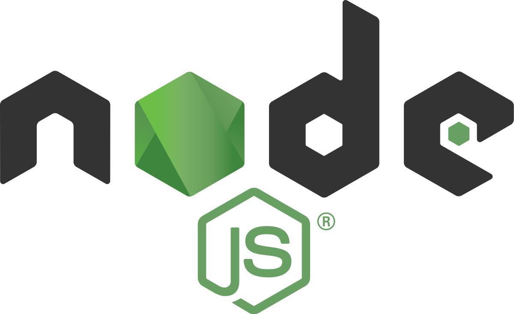
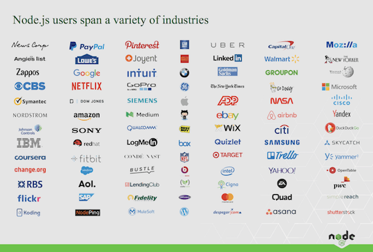
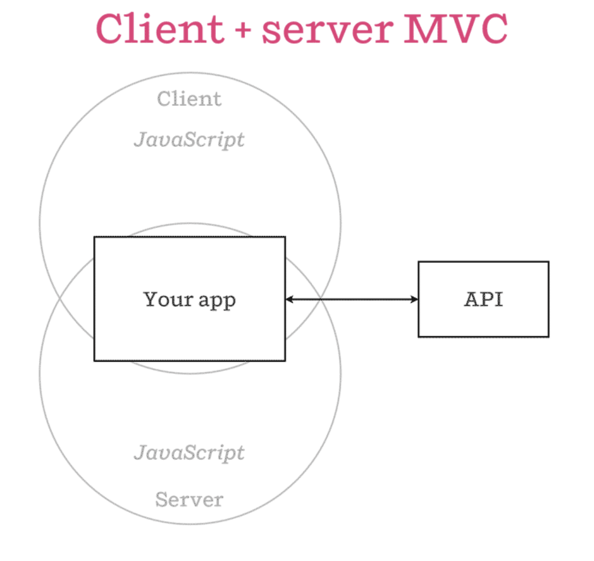
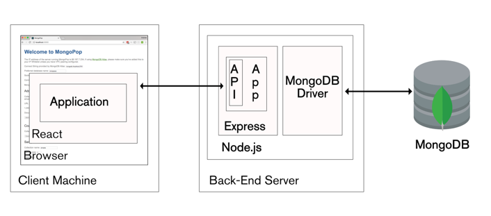

Node in Depth: Intermediate
github/henrybv

Overview
- Review: Node ecosystem, event loop
- Promises
- Express.js
- How to start building with Node.js
Expectations
- Good grasp of JavaScript, & have attended or watched Node Basics lecture 👍
- Please participate by answering my questions 😺
Links
Review
Node.js
- Powerful server-side JavaScript platform/ runtime for building "fast, scalable network applications."
- Runs on Chrome V8 engine

Which companies use Node?
From leading startups to Fortune 500 companies..

Single-Page Applications <--> Chrome V8 engine <-->
Isomorphic JavaScript

Dichotomy of a fullstack web app built with Node.js

"Node.js is an event-driven, asynchronous/ non-blocking I/O platform"
"Event-driven": Node callbacks are made possible by the event loop.

- "Synchronous, or blocking": code runs in sequential order. Program waits for the line of code to finish executing before moving on to the next line of code.
- "Asynchronous, or non-blocking": code does not wait for the current line to execute before moving on to run the next line.
Callbacks
readFile(function (err, data) {
if (err) return console.error(err)
console.log(data)
})
A promise
A promise represents the eventual result of an asynchronous operation. It is a placeholder into which the successful result value or reason for failure will materialize.
Callbacks to promises
var promise = readFile()
promise.then(console.log, console.error)
A promise
A promise represents the eventual result of an asynchronous operation. It is a placeholder into which the successful result value or reason for failure will materialize.
Chaining and nesting promises, elegantly.
var promise = readFile()
var promise2 = promise.then(readAnotherFile, console.error)
readFile()
.then(readAnotherFile)
.then(doSomethingElse)
.then(...)
Promises can be nested as well if keeping a closure alive is important
readFile()
.then(function (data) {
return readAnotherFile().then(function () {
// do something with `data`
})
})
Error handling in promises
Synchronous code:
try {
doThis()
doThat()
} catch (err) {
console.error(err)
}
Error handling in promises
Asynchronous code:
doThisAsync()
.then(doThatAsync)
.then(undefined, console.error)
Get good at promises
https://github.com/stevekane/promise-it-wont-hurt
https://nodeschool.io/
Dichotomy of a fullstack web app built with Node.js
Dichotomy of a fullstack web app built with Node.js
Express.js
- "Fast, unopinionated, minimalist web framework for Node.js"
- 5x/ 10x less code.
- Organize web app into MVC on server-side.
- Then use a database like MongoDB or Mongoose (for modeling) to provide back-end for application
- Helps manage everything: routes, handling HTTP requests, views.
Express.js
- "Fast, unopinionated, minimalist web framework for Node.js"
- Install Express: https://expressjs.com/en/starter/installing.html
- https://expressjs.com/en/4x/api.html
A simple Express application/ server
var express = require('express');
var app = express();
app.get('/', function(req, res){
res.send('hello world');
});
app.listen(3000);
A Node library for (HTTP) request handling
- Client: makes HTTP requests
- Server: responds to HTTP requests
- Request - Response cycle: the client initiates by sending request, and server completes it by sending exactly 1 response.
- https://restful.io/an-introduction-to-api-s-cee90581ca1b
Easy to follow Express tutorials
- https://developer.mozilla.org/en-US/docs/Learn/Server-side/Express_Nodejs
- https://medium.freecodecamp.org/building-a-simple-node-js-api-in-under-30-minutes-a07ea9e390d2
Gotchas
- app.use vs. app.all
- req.params vs. req.query vs. req.body
- Documentation: https://expressjs.com/en/4x/api.html
- Googling & Stack Overflow :D
Bloc Resources & Next Steps
NodeSchool.io quick tutorials
Aadditional foundational practice
- Learnyounode
- How to npm
- ExpressWorks
- Promise It Won't Hurt
- Async You
EXPRESS.JS
A Node library for error handling
- Treats requests as objects, created by event
- matches on VERB and ROUTE
- allows chaining of (many) handlers
- enables modular layering with "routers"
Install Express.js
npm install express (--save)
https://expressjs.com/en/starter/installing.html
Promises
npm install express (--save)
https://expressjs.com/en/starter/installing.html
Install Express.js
npm install express (--save)
https://expressjs.com/en/starter/installing.html
Install Express.js
npm install express (--save)
https://expressjs.com/en/starter/installing.html